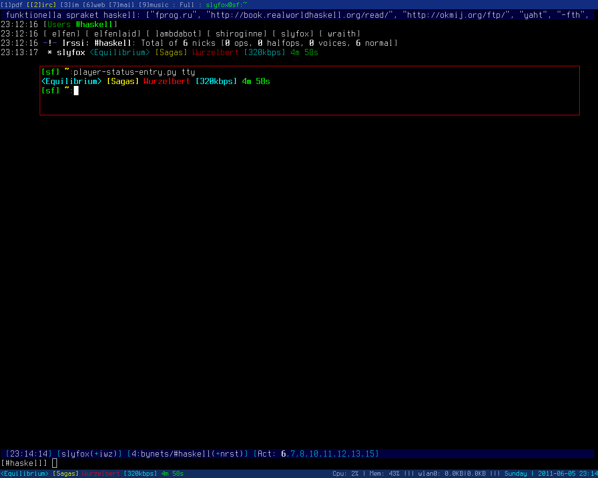

new xmms2 bell
Недавно в git дереве полностью заменили консольный интерфейс к
демону xmms2. Для меня это обернулось тем, что отвалилась моя
любимая отрисовывалка песенки в трее и я решил это пофиксить.
Причем отвалилась она довольно оригинально: xmobar (мой менеджер
трея) сожрал всю память. Оказалось, что команда xmms2 status больше
не вставляет переводы строк в конец вывода.
На канале #xmms2 мне посоветовали написать своего клиента. Авторы
больше всего шарят в python и c, так что первый вариант слепил
на python. Вот его исходник:
#!/usr/bin/python
import sys
if sys.argv[1] in ['irc', 'xmobar', 'none', 'tty']:
pass
else:
print "ERROR: please choose available flavour"
exit(1)
#
# Умеем работать в нескольних режимах:
#
flavour = sys.argv[1]
#
# цвета для разных сред задаются по-разному
#
def paint(color, text):
if flavour == 'xmobar':
return "<fc=%s>%s</fc>" % (color, text)
elif flavour == 'irc':
colors = { 'green' : 3
, 'brightred' : 4
, 'red' : 5
, 'yellow' : 7
, 'brightyellow' : 8
, 'cyan' : 10
, 'brightcyan' : 11
, 'gray' : 14
, 'white' : 15
}
return "\x03%02d%s" % (colors.get(color, 15), text)
elif flavour == 'tty':
colors = { 'green' : 32
, 'brightred' : 31
, 'red' : 31
, 'yellow' : 33
, 'brightyellow' : 33
, 'cyan' : 36
, 'brightcyan' : 36
, 'gray' : 30
, 'white' : 29
}
return "\033[01;%02dm%s\033[00m" % (colors.get(color, 15), text)
elif flavour == 'none':
return text
else:
print "ERROR: bad flavour: %s" % flavour
exit(1)
import locale
locale.setlocale(locale.LC_ALL, '')
locale_enc = locale.nl_langinfo(locale.CODESET)
#
# чудо инженерной мысли: python требует явного
# перекодирования строк из его внутреннего представления
# в локаль пользователя.
#
def show(s):
print(s.encode(locale_enc
, errors='backslashreplace'
#, errors='replace'
#, errors='xmlcharrefreplace'
)
)
#
# собственно сам клиент
#
import xmmsclient
xc = xmmsclient.XMMSSync('xmobar-tray')
xc.connect()
mid = xc.playback_current_id()
mdata = xc.medialib_get_info(mid)
#
# это приоритет полей, по которым осуществляются выборки:
# У нас тут ('plugin/segment', 'duration') (длина песни в плейлисте)
# будет более приоритетной, чем ('server', 'duration') (длина всего плейлиста)
#
mdata.sources = [ 'client/xmobar-tray'
, 'plugin/segment'
, 'server'
, 'plugins/*'
, 'client/*'
, '*'
]
def pp_duration(milliseconds):
result = ""
seconds = milliseconds / 1000
minutes = seconds / 60
hours = minutes / 60
days = hours / 24
started_output = False
if days > 0 or started_output: result += ("%dd " % days); started_output = True
if hours > 0 or started_output: result += ("%dh " % (hours % 24)); started_output = True
if minutes > 0 or started_output: result += ("%dm " % (minutes % 60)); started_output = True
if seconds > 0 or started_output: result += ("%ds" % (seconds % 60)); started_output = True
return result
#
# собственно, вывод:
#
show(' '.join(map( lambda(c,t): paint(c,t)
, [ ('cyan', "<%s>" % mdata.get('artist', '?'))
#, ('green', "%s" % '-')
, ('yellow', "[%s]" % mdata.get('album', '?'))
#, ('green', "%s" % '-')
, ('red', "%s" % mdata.get('title', '?'))
, ('cyan', "[%dkbps]" % (mdata.get('bitrate', 0) / 1000))
, ('green', "%s" % pp_duration(mdata.get('duration', 0)))
])))
Результат работы команд в IRC клиенте (pse.py irc), терминале
(pse.py tty), и в xmobar(pse.py xmobar):

.UPDATE: я же забыл самое главное, выпендриться!
Эта свистелка помогла найти мне баг в самом xmms2. На mac
плагине я заметил, что bitrate не бывает выше 1 kbit/s (обычно
0), а это losless формат, так что цифры должны быть 600-1000 kbit/s. Оказалось, mac нетрадиционно возвращает битрейт не в битах
в секунду, а в битах в миллисекунду:
патч.